Coordinated Research Area
43.6 km²
Area from official text; precise boundaries require formal data.
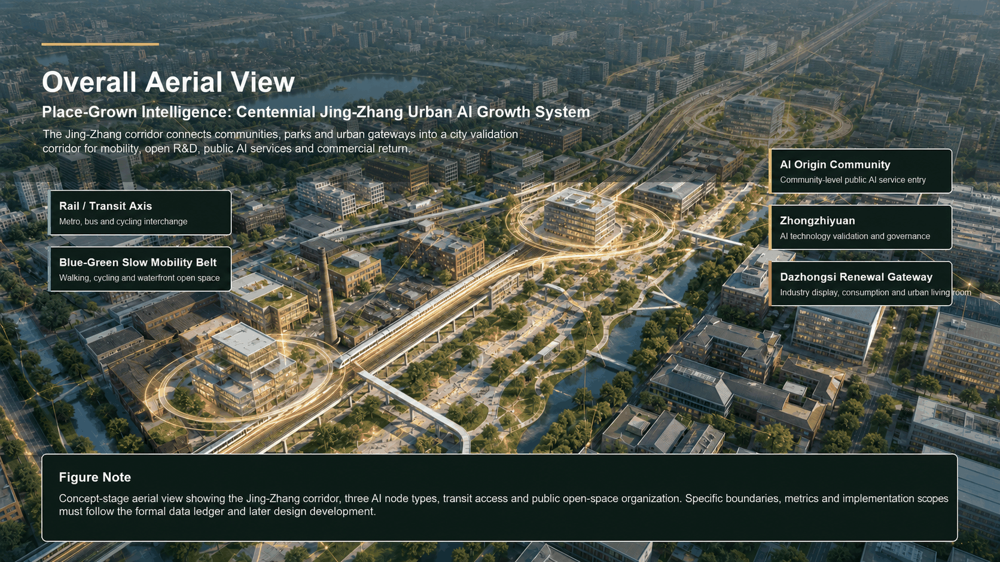
Core Metrics
The following numbers support the reading layer after the hero section. For formal submission, they must remain consistent with `metrics.json`, GeoJSON, and matrix files. Any provisional scope must be recalculated after official polygons are available.
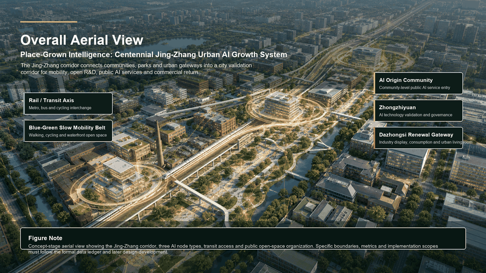
Scope Study
The proposal first clarifies the innovation ecosystem across 43.6 km², then organizes the public framework, slow-mobility blue-green links, renewal projects, and AI scenarios within the 11.4 km² overall design area. Finally, the three key areas are translated into spatial and operational tasks for professional design development.
Studies regional relationships among universities, research institutes, enterprises, communities, transit stations, blue-green spaces, and Zhongguancun technology service resources, identifying which innovation capabilities can enter real urban problems along the Centennial Jing-Zhang corridor.
Boundary: this layer does not set statutory indicators, building heights, road redlines, or engineering implementation conclusions.
Organizes a low-disturbance urban renewal structure: continuous public framework, river-park validation belt, community/university/industry short loops, three AI key areas, and the Zhongguancun technology service network.
Boundary: this is a concept-level overall design; area, green-space ratio, and public-space ratio must be recalculated from GeoJSON in the submission package.
Zhongzhi Park handles technology validation and governance admission, AI Origin Community handles real-problem intake and youth co-creation, and Dazhongsi handles productization, classified operations, and international exchange. Together they form one urban AI growth chain.
Boundary: the key areas still use provisional geometry and concept carriers; they do not represent secured space, approvals, leasing, ownership, or enterprise commitments.
The key to the scope study is not filling the map with lines, but separating what can be evidenced from what cannot yet be evidenced. Official text areas can explain scale, while provisional geometry can support concept testing. Once formal redlines, planning conditions, ownership, buildings, utilities, and on-site flow data are available, relevant metrics must be recalculated and updated in `metrics.json`, drawings, and the web page.
Concept Framework
The English drawing is taken from the user-supplied A3 PDF set. It aligns the three-level scope map, continuous public spine, and concept framework, so the web presentation and English booklet use the same source drawing rather than the earlier draft diagram.


Start from real problems raised by residents, young people, passers-by, cultural participants, enterprises, and operators, while preserving offline human service, refusal rights, and feedback receipts.
Each AI scenario first passes scenario passporting, data-boundary review, safety assessment, human takeover, and exit/recovery checks before entering public-space validation.
Public-value projects enter continued public assessment, while commercial projects enter productization. Commercial returns are proposed as a mechanism to support public AI renewal.
Three Key Areas
The English drawings in this section come from the user-supplied A3 PDF pages for the final English board set. Land-use structure, scenario carrier selection, and the three key areas now use the same source pages as the English booklet.

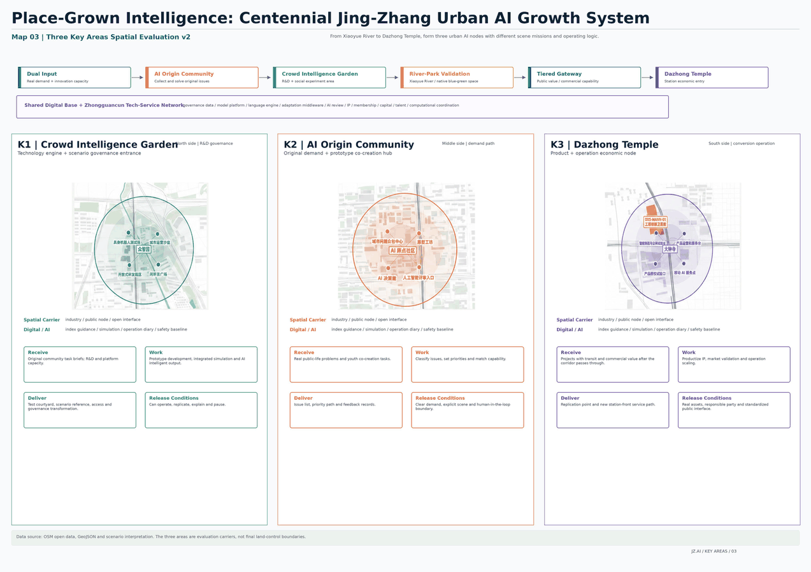
Hosts shared governance sandboxes, controlled testing courtyards, public observation corridors, and maintenance backrooms. The public can understand testing, while high-risk tests require separation, records, and human takeover.
Provides human service desks, urban problem walls, co-creation tables, prototype workshops, and community review rooms, turning needs into queryable and feedback-ready scenario passports.
Hosts product validation halls, shared enterprise services, international exchange, and public/commercial classification assessment. Lanjing Lijia-type carriers remain conditional candidates, not secured spaces.
Key Area Renderings
Each node rendering uses the labeled effect image from the current English board set, keeping the same concept-stage boundary statement as the Chinese page.
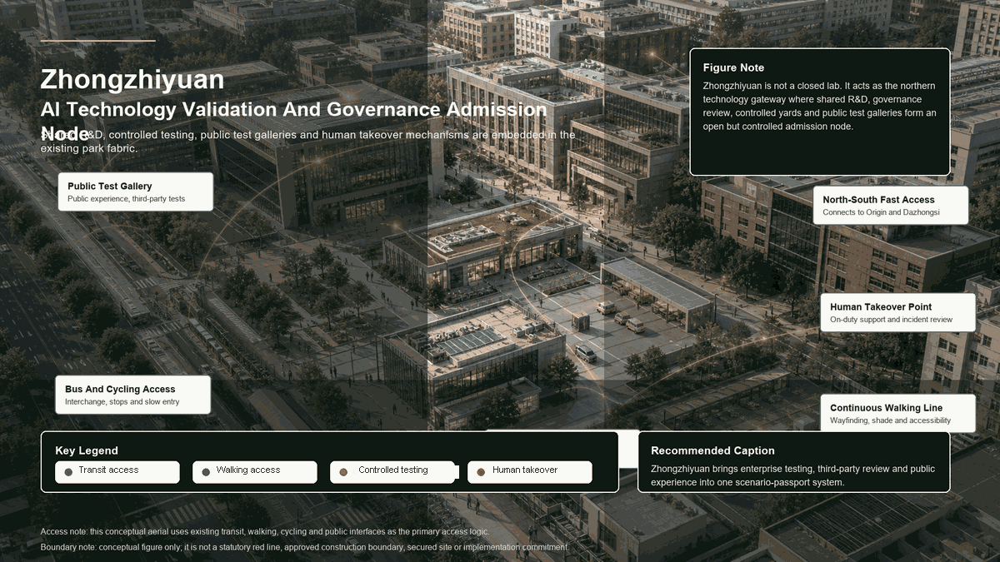
Labeled effect rendering for the technology validation and governance-access node.
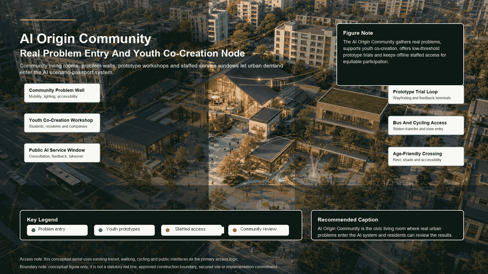
Labeled effect rendering for the real-problem intake and youth co-creation node.
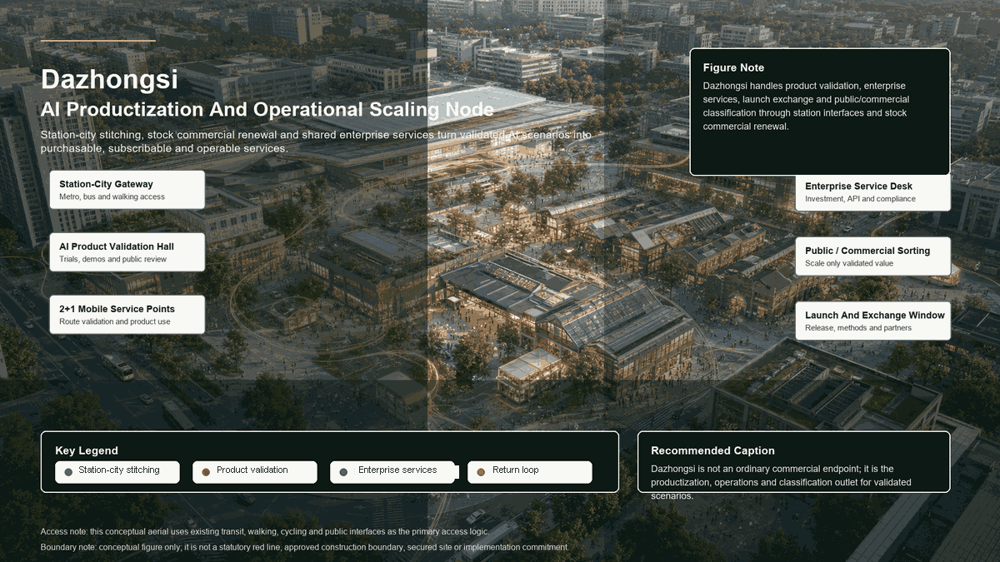
Labeled effect rendering for productization, operations scaling, and commercial/public classification.
Persona Analysis
The proposal reframes people from passive footfall into urban participants who raise problems, validate together, support operations, and receive feedback. Each persona must correspond to real tasks, spatial entry points, AI capabilities, human fallback, and refusal boundaries, preventing public-space AI from becoming one-way extraction.
Focus on walking safety, rest and supply points, senior/child-friendly service, community problem feedback, and public-service accessibility; need offline human counters, non-smartphone entry, and clear feedback receipts.
Focus on continuous travel from stations, communities, and universities to river-park and industry nodes; need explainable detours, night help, cycling/walking support, and low-disturbance prompts.
Focus on real problems, rapid prototypes, testing sites, and review feedback; need open workstations, prototype workshops, scenario passports, and controlled testing opportunities.
Focus on Centennial Jing-Zhang memory, Xiaoyue River experiences, heritage park activities, and traceable interpretation; need low-disturbance displays, content-rights notices, and optional participation.
Focus on compliance assessment, user testing, device trials, product launches, and procurement conversion; need Zhongzhi Park admission, Dazhongsi classification operations, and clear IP boundaries.
Focus on device maintenance, human takeover, complaint closure, risk review, and annual operations; need readable logs, work orders, stop conditions, and asset ledgers.
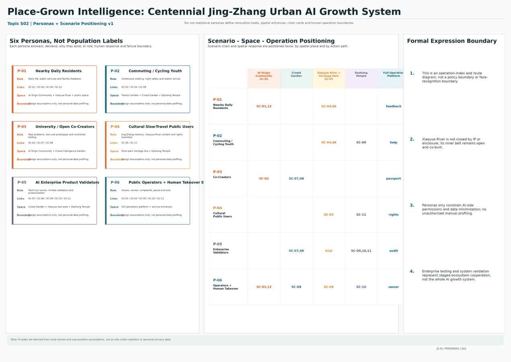
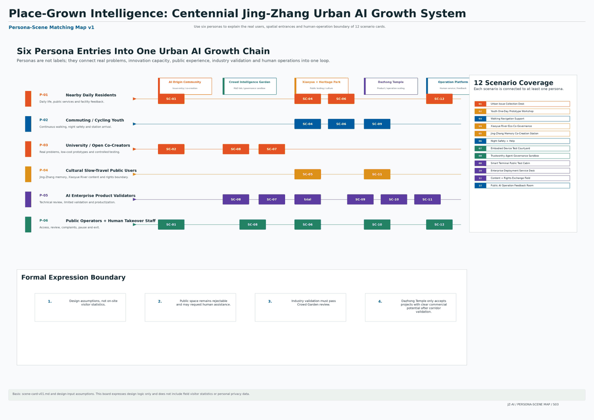
12 Initial AI Scenarios
All 12 scenarios enter the scenario passport system, recording data boundaries, responsible parties, human takeover, stop conditions, and exit/recovery. SC-07 to SC-10 are industry testing and validation scenarios; they enter productization or scaling discussion only after passing public-value, community-acceptance, technical-performance, and operational-feasibility assessment.
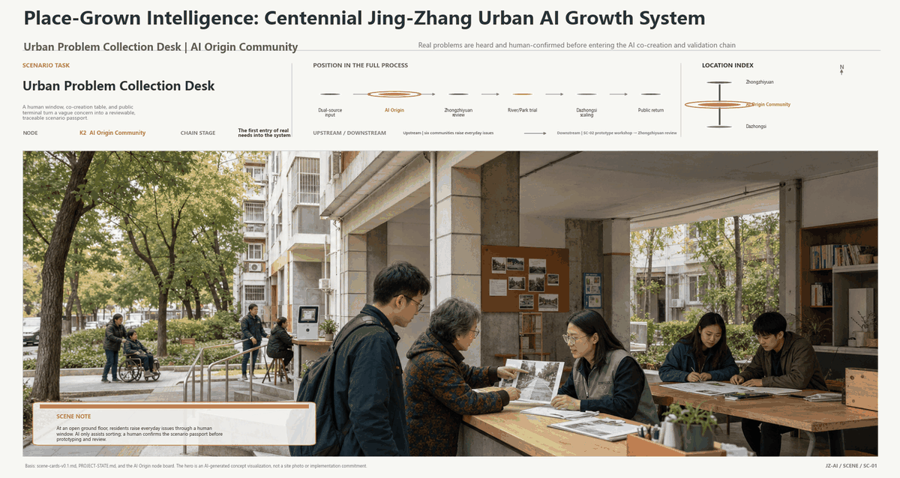
The Origin Community and mobile service points organize problems raised by residents, passers-by, and operators into reviewable scenario passports.
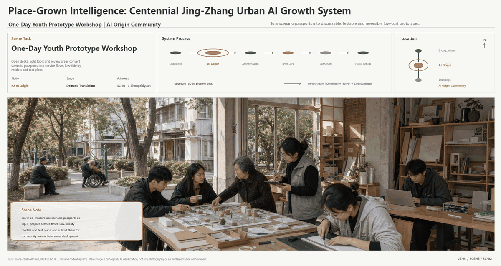
Translates real urban problems into low-fidelity models, service flows, and testing plans, forming first-round prototypes for discussion.
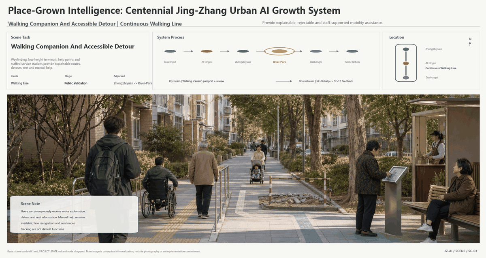
Provides detours, rest, help, and human service along the continuous walking experience line without turning route service into mandatory tracking.
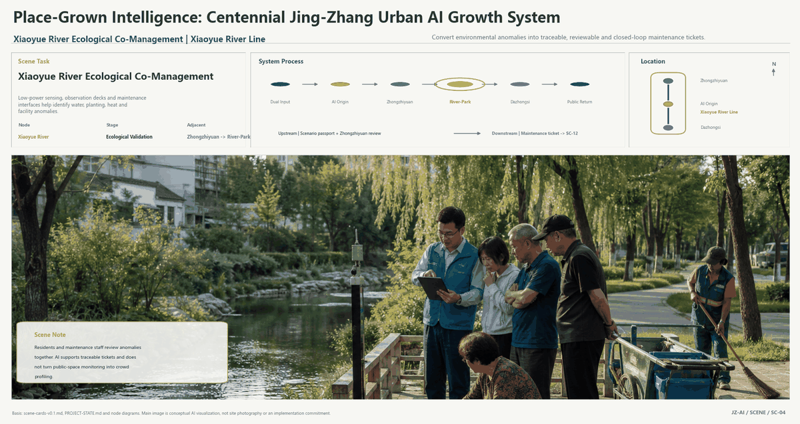
Uses environmental and facility data to help identify water, planting, heat, and facility anomalies, generating maintenance work orders.
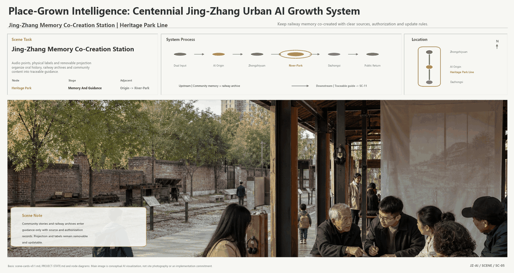
Organizes oral histories, railway archives, and community content into traceable interpretation, with source and authorization recorded.
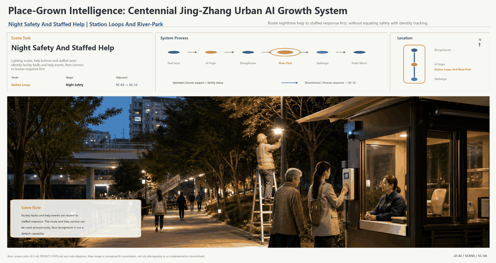
Station loops and river-park spaces prioritize human-staffed response for facility faults, help requests, and night-safety feedback.
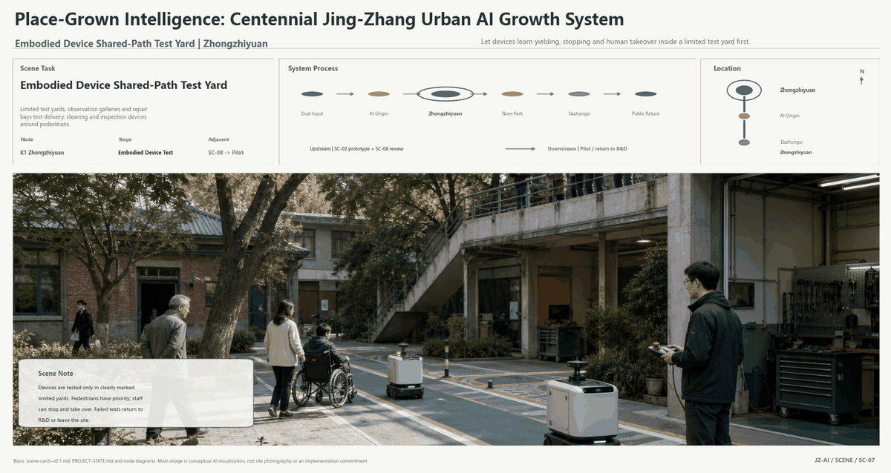
Tests avoidance, stopping, takeover, and exit/recovery for delivery, cleaning, inspection, and other devices in controlled areas of Zhongzhi Park.
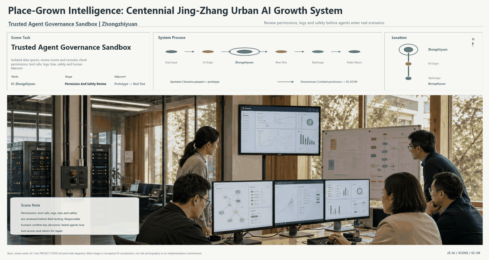
Reviews agent permissions, tool calls, logs, bias, safety, and human takeover, preventing direct deployment without governance.
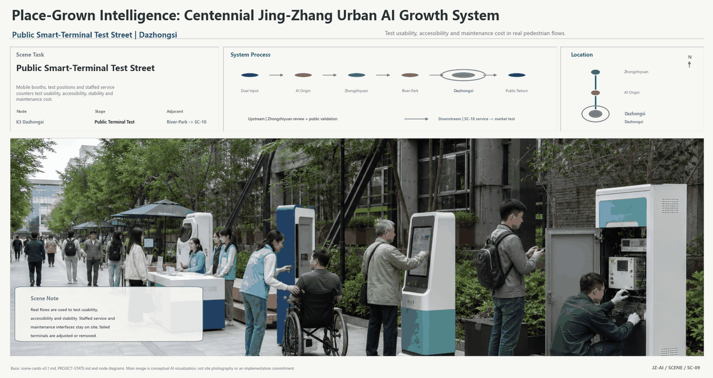
Tests usability, accessibility, stability, maintenance cost, and human-service boundaries of public terminals in real pedestrian flow.
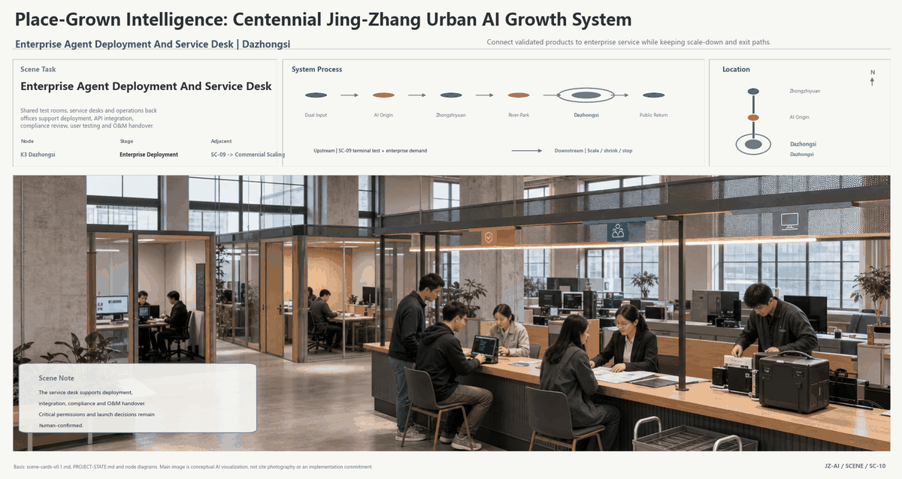
Supports product deployment, API access, compliance checks, user testing, and operations handover at Dazhongsi.
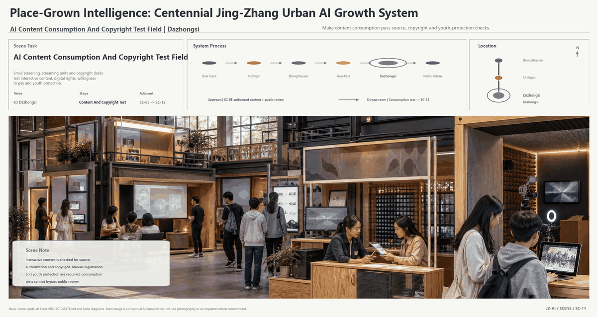
Tests interactive content, digital copyright, willingness to pay, and minor protection, with source and authorization recorded for all content.
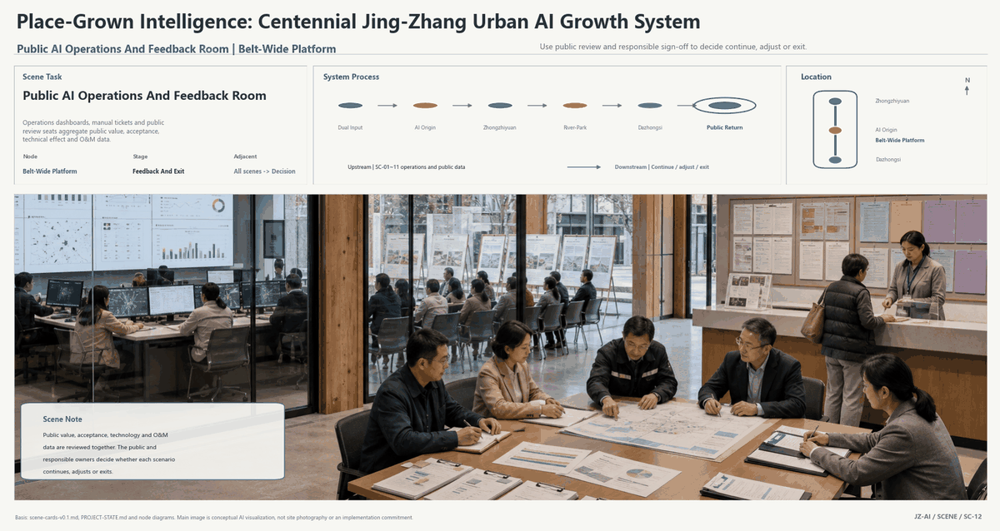
Aggregates public value, acceptance, technical performance, and operations data to support continue, adjust, or exit decisions.
Technical and Economic Metrics
This page includes only the main metrics that can be expressed at concept stage. All amounts, ratios, route lengths, public-space ratios, and green/blue-green ratios must be checked against boundaries, drawings, `metrics.json`, GeoJSON, and cost-estimation tables before formal submission.

| Metric Category | Current Expression | Boundary Statement |
|---|---|---|
| Spatial Scope | Coordinated research: 43.6 km²; overall design: 11.4 km²; three key areas: 368.4 ha total. | Official text areas plus provisional geometry; recalculate after formal boundaries are available. |
| Mobility and Public Framework | North-south fast connection about 22.0 km; continuous walking about 10.5 km; heritage park experience about 10.3 km; five east-west stitching links about 9.3 km total. | Routes include shared and overlapping segments, so they cannot be directly summed as construction length. |
| Scenarios and Governance | Twelve initial AI scenarios, including four industry testing and validation scenarios, using shared scenario passports and four-dimensional validation. | Do not state these as already deployed, approved, or supported by operational data. |
| Investment and Operations | Financial outputs have been withdrawn to unknown/value=null; only a recomputable parameter model remains. | Not a budget, approved estimate, financing, leasing, procurement, revenue, or public-reinvestment commitment. |
Sources and Evidence Chain
This page is not a poster, but a traceable web presentation draft: official materials define tasks and scopes, public data supports background judgment, user-confirmed inputs form the concept framework, and project working files generate spatial, scenario, technical, and economic expressions. All provisional boundaries, estimates, candidate spaces, and renderings retain conditional statements.
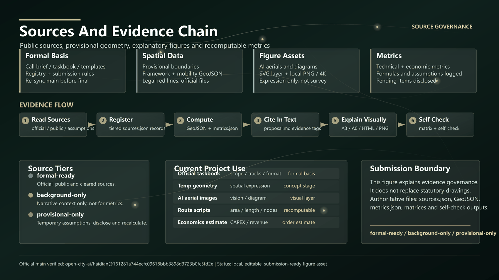
The current web page completes a presentation-ready English working draft. It can explain design logic, spatial character, scenario systems, and metric basis, but before formal submission the official rule version, source ledger, GeoJSON, `metrics.json`, bilingual drawings, web files, A0 boards, A3 booklet, and final preflight record must still be updated consistently.
Formal Submission Audit Index
This restored page keeps the final full visual presentation and adds machine-readable core metrics required by the official checker.
Blue-green public space
Public-space ratio
Key areas